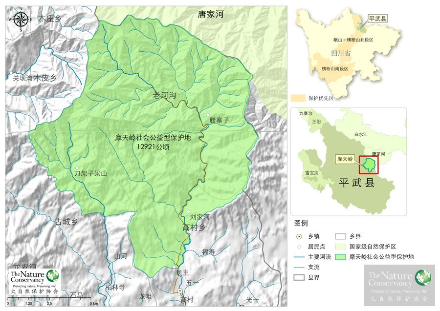
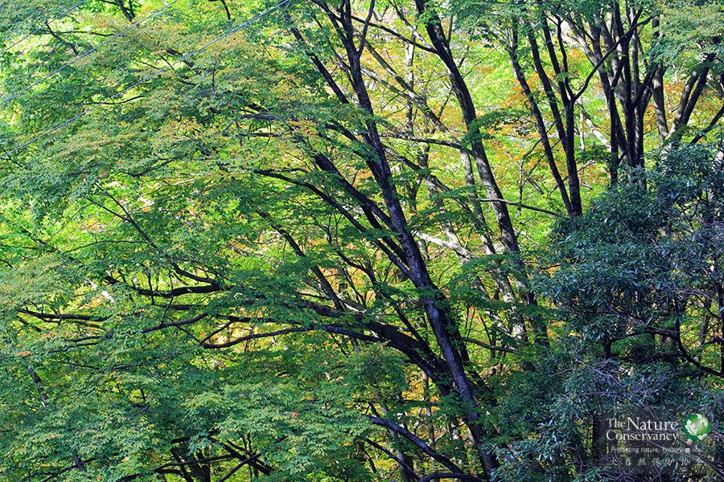
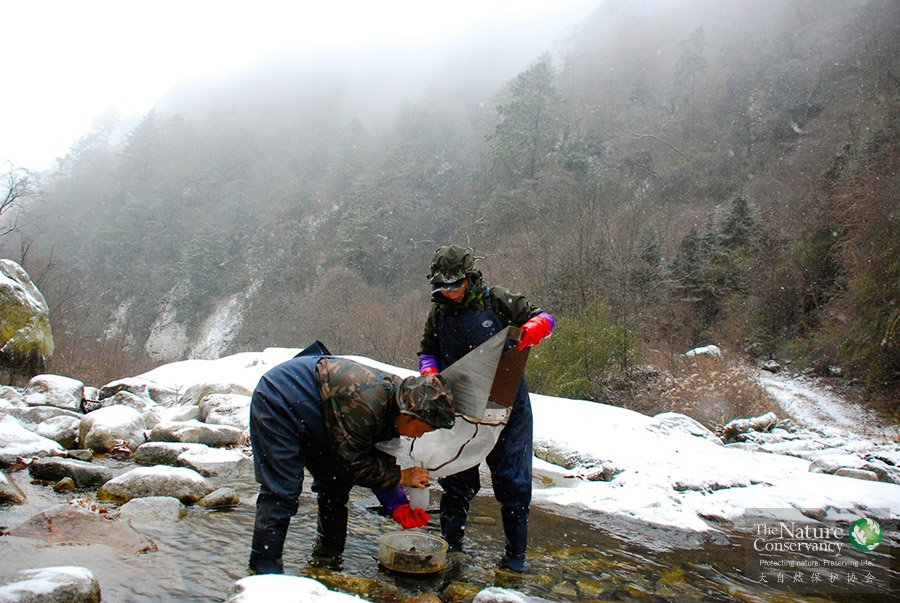
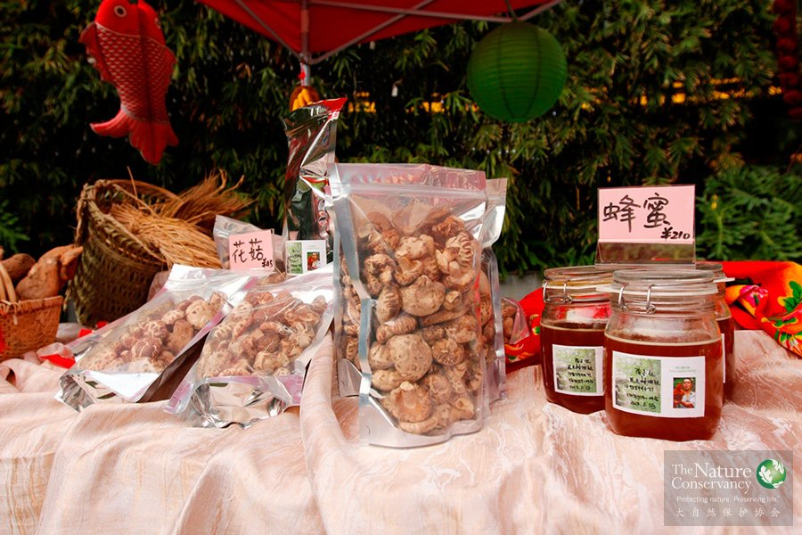

项目概览

四川保护区地图
背景
自1958年建立第一个自然保护区以来，中国现已建成2600多个不同类型的自然保护区，约占国土面积的15.13%，初步构建了中国的自然保护体系。然而，缺乏可持续的充沛的资金投入、缺乏统筹规划以及管理能力不足等因素仍然极大地制约着自然保护区功能的有效发挥。
社会公益型保护地，是探索政府监督、民间管理的新型保护地模式。通过建立引进社会公益资金的融资渠道与管理平台，对具有高度生物多样性保护价值的土地开展保护，可以促进政府和社会携手推动自然保护事业的发展。该模式是对现有自然保护体系的有机补充。
目标
2015年以前，TNC在四川省建立以生物多样性保护为宗旨的公募基金会，结合林权制度改革的政策，建成两个可示范的社会公益型保护地；TNC将以科学为基础，统一规划、建立并运营保护地，并与已建成的自然保护区合作，构建有效的保护网络；将社会公益保护模式在更大的范围内推广。
TNC的思考
将社会公益资金引入自然保护领域，是一个多赢的结果。依托逐渐充裕的民间资金，通过建立社会公益型保护地，将存在于现有保护体系内碎片化的保护地重新连接，将可形成更加有效的保护地网络。
TNC期望通过社会公益型保护地的模式，可以在保护地内通过建立生态监测体系，实现基于科学的适应性管理（Adaptive Management），搭建科研平台，吸引更广泛的科研力量参与；探索适合保护区周边社区发展的“绿色”生计，调和“保护与发展”之间的矛盾，将保护工作的前沿拓展至社区；同时，希望这一保护模式，可以促进政府的角色进一步转换为监督、执法，通过放活保护的“管理权”，为引导社会公益资金投入保护事业提供政策保障和法律支持。
TNC的解决方案
经过科学的数据分析及实地调查，TNC最终选定了四川省绵阳市平武县摩天岭区域作为第一个项目点。
摩天岭社会公益型保护地位于岷山-横断山北段生物多样性保护优先区，是岷山大熊猫的典型栖息地区域，毗邻四川唐家河、甘肃白水江国家级自然保护区，以大熊猫、金丝猴、羚牛、红豆杉等珍稀动植物为保护对象，覆盖了面积约为110平方公里的森林生态系统，对该区域的保护将有效地弥补原本的保护空缺。
摩天岭社会公益型保护地项目将致力于探索由社会公益机构投入和管理的新型保护模式，在这里将建立中国第一个“民营”的自然保护区，实现“科学”的保护管理；在保护区外围设立扩展区，将“绿色”发展融入社区。
老河沟
林权改革和社会资金投入保护地的机会

四川老河沟项目地®TNC
目前，中国政府已充分认识到要解决自然保护区面临的问题必须从体制上入手。近年来，国务院在“关于全面推进集体林权制度改革的意见”、2011年的“中央1号文件”等政府文件中明确了新的思路，提出积极引导多元化资金参与生态建设的策略。
2011年9月，TNC和多位热心公益事业的企业家等社会力量共同发起，四川西部自然保护基金会正式成立。这一基金会搭建起了关注生物多样性保护的融资和管理平台，启动了社会公益型保护模式的探索。
一方面，社会公益型保护地将为希望投入生态保护但找不到合适途径的公益资金提供平台；另一方面，这些宝贵经验也可为推进自然保护区发展及深化林权制度改革提供借鉴。
信息化科学保护

四川老河沟项目地水生生物本底调查®TNC
为了更有针对性地对当地野生动植物进行保护，TNC与北京大学、中国科学院等科研院所合作，用近2年的时间逐步完成了保护区的本底调查，摸清了保护区内动植物的种类及栖息地状况；用保护行动规划（Conservation Action Plan，CAP）等工具，对保护地进行科学规划管理，建立了保护区评估指标体系，建立了日常生态监测体系，利用手持野外终端、视频监控设备和数据分析管理平台等信息化手段等，对保护地内的动植物资源开展全面监测；搭建科学研究的平台，吸引国内外的科研机构及科学家在此工作，根据管理和保护需求提出问题并开展科研合作；建立面向公众的交流和信息分享平台，发展生态教育及体验。
目前，TNC先后累计在110平方公里的森林里布设了80多个红外触发相机点，首次清晰捕获了野生大熊猫食用羚牛尸体的珍贵照片。
社区发展

四川项目地产品®TNC
让社区在从事保护的过程中受益，是实现保护成效的前提条件。
为缓解保护的发展压力，TNC在保护区外围设立“扩展区”，将生产经营性活动集中于该区域，尽可能减少人类活动对保护区的干扰，同时使社区老百姓在从事保护的过程中受益，实现保护区-社区共赢。TNC在社区设立了生态产业发展基金，鼓励村民从事可持续的生态农业；帮助村民建立专业合作社，推动社区定制生态农产品的发展。目前，包括蜂蜜、土鸡蛋、腊肉等在内的社区生态农产品已经列入第一期产品目录。
2月
22
四川山鹧鸪（学名：Arborophila rufipectus）虽然貌不惊人但级别很高，是国家一级保护动物，中国特有物种，而且没有亚种。它在万千种漂亮的鸟中为什么会有如此地位？全因珍稀罕见。
1月
14
冬季的老河沟森林保护区内，腐树枯树和林地厚厚的落叶加上干燥多风的天气，很容易突发森林火灾。森林一旦失火，不仅大量树木被烧毁、林分密度降低，同时还可能引起树种向低价值树种、灌丛、杂草更替，改变原有生态群落结构，降低森林利用价值。
12月
23
大自然保护协会TNC社会公益型保护地、老河沟保护中心与唐家河国家级自然保护区同处于岷山山脉，两个保护区紧紧相接，都是大熊猫、川金丝猴、羚牛、林麝等野生动物的重要栖息地。
12月
15
9月中旬开始进山考察研究川金丝猴的研究小组把考察重点集中在猴群常逗留的干沟及药山沟，观察到15次实体，发现了25处粪便和食迹的新鲜痕迹。
11月
26
11月17日，中国TNC社会公益型保护项目地、四川省八月林保护区的彝族乡亲们沉浸在欢乐的海洋中，他们跳起彝家传统的月琴舞，吹响凉山的三叶口弦，庆祝八月林第一个彝族文化艺术节。
9月
10
9月7日，中国TNC在四川省八月林自然保护区开始了第三轮大中型兽类红外相机专项调查，继续摸清保护区野生动物的分布、密度、种群数量和人为干扰等信息，同时对保护区人员进行野外监测技能的培训。
8月
3
7月21日，中国TNC项目团队在四川省八月林自然保护区开始第二轮大中型兽类专项调查。调查将进一步摸清八月林保护区内野生动物的分布、密度、种群数量和人为干扰的情况。
7月
23
四川省平武县的老河沟自然保护区位于摩天岭山脉之中，属于中亚热带季风气候区，夏季多雨。多样复杂的地理环境和植被为野生动物的生存繁衍提供丰了理想的栖息地和食物。
7月
20
7月11日，四川老河沟自然保护区的密林深处装上了对讲机中继台。从此后，10多公里距离间，对讲机通话也会十分清晰流畅，保护区工作人员可以第一时间了解山上的情况，进山巡护的队员可以保持良好的通讯，大大方便了远程联络。
7月
7
想看群山吐翠，沟谷深险，也想看云雾缭绕的茶园？想看珙桐、桢楠和竹海，也想看大熊猫，四川山鹧鸪等国家保护野生动植物？八月林自然保护区一起打包为你送上！让你想不被迷住都！不！行！
7月
7
简单的认识了八月林，见识了工作人员在八月林“惊心动魄”的工作生活之后，是不是已经迫不及待的想看看工作人员们千辛万苦安装的红外相机都拍到了什么？（听说是刚“新鲜出炉”的！）
6月
30
为了保护濒危野生大熊猫，还它们一个良好的栖息环境，减少威胁因素，让他们吃的好、过的好，大自然保护协会（TNC）携手国内首家互联网保险公司众安保险，推出此款专为老河沟自然保护区大熊猫量身打造的保险，旨在保障大熊猫的生态环境。
6月
23
四川八月林保护区内有超过80%的面积是四川山鹧鸪的适宜栖息地。今年春季，在大自然保护协会（中国TNC）和四川西部自然保护基金资助下，保护区完成了四川山鹧鸪的初步调查。
5月25日，云南省普洱市江城县副县长殷灵率当地林业官员和国际爱护动物基金会（IFAW）中国项目官员一同来到四川省老河沟自然保护区，就如何建立社会公益型保护地、开展亚洲象保护等问题进行了考察交流。
5月
25
5月15日，中国TNC项目团队在四川省八月林自然保护区结束了大中型兽类专项调查。此次调查的目标是摸清保护区野生动物的分布、密度、种群数量和人为干扰等信息，并据此次制定长期监测方案，同时对保护区职工进行野外监测技能的培训。
5月10日，国家林业局经济发展研究中心处长张升博士、中央党校王晓莉副教授、中国农业大学汪力斌教授等专家及绵阳市平武县林业局的官员一同来到四川老河沟社会公益型保护区调研。
4月
12
4月6日至8日，中国灵长类学会理事长、西北大学生命科学学院副院长李保国教授带领研究团队来到四川平武的老河沟保护区，与中国TNC专家一同商讨在老河沟开展川金丝猴生态学和保护生物学长期研究合作的事宜。
1月
22
2015年伊始，老河沟自然保护中心邀请科学家同中心员工一道商讨老河沟未来五年的发展目标。大家从科学保护、社区发展、自然宣教、管理运营等方面对老河沟未来5年的方向进行了描绘，并针对具体目标和实现步骤进行了热烈的讨论。
11月
27
11月17日，中国TNC科学家结束了对四川省白沙河林场生物多样性基本情况的快速调查，初步掌握了这片具有山地溪流地貌，也有大熊猫等野生动物栖息的森林的基本情况,摸清了林区面临的主要威胁。
9月
3
这条白头蝰身长约50厘米，拇指粗细。白头蝰在中国曾广泛分布，但属稀有蛇种，是我国现有毒蛇中最毒的27种之一，号称“一碰毙命”。因其极难观测到而被世界爬虫界公认为最令人头疼的毒蛇之一，已列入中国易危动物名录。
8月
7
不久前，植物科学家在四川老河沟保护区发现了珙桐的分布。珙桐是1000 万年前新生代第三纪留下的孑遗植物，有“植物活化石”之称。珙桐花色凄美，是国家8种一级重点保护植物，也是世界著名的观赏树木。
7月
8
2014年仲夏，位于岷山深处的中国TNC项目地老河沟传出喜讯：科研人员在原始森林的尽头、海拔3000米以上的高山草甸高耸的冷杉林下发现了国家一级保护植物独叶草。因极高的药用价值，独叶草被誉为"世珍国宝"。
6月
30
记者6月28日从四川西部自然保护基金会项目地平武县老河沟自然保护区获悉，保护区的红外相机不久前捕捉到极为有趣的镜头：一只憨憨的熊猫先对着镜头卖萌，又对着镜头“拉粑粑”，像是在表演给人们看，让人忍俊不禁。
4月
24
它是我们老河沟保护区发现的植物新种，被定名为“平武翠雀花”（Delphinium pingwuense），属四川毛莨科，翠雀属。它花型别致，形态优雅，酷似燕子，当地老百姓称作“飞燕草”。
11月
14
蝴蝶飞过，昆虫学家会迅速告诉你这种蝴蝶的种类和习性，植物学家会告诉你哪种植物可以用来“醉鱼”以及为什么濒危的独蒜兰会生长在岩壁上，动物学家会告诉你路上遇到的粪便很可能是豹猫为了宣告那是它的领地而留下的。
11月
4
2013年11月4日，国家林业局野生动植物保护司司长张希武、副司长孟沙在四川省林业厅副厅长绛初、平武县人民政府副县长王忠雪的陪同下考察了四川省平武县摩天岭社会公益型保护地项目。
6月
26
联合国大会确定今年为“国际森林年”，活动的主题是“森林为人类服务”。也是在这一年，TNC在森林保护领域的新尝试“社会公益型保护地”步入一个新阶段。这个保护项目与“森林年”的主题不谋而合，通过“社会公益型保护地”把 “民为森林、森林为民” 落在了四川的大山里，把中国公益力量带到森林保护中来。
4月
29
TNC CDM造林和森林管理项目组于2010年4月中旬前往项目地----四川省凉山彝族自治州考察。这是该项目第三次实地考察，诺华公司的专家和相关人员参加了此次考察。

1月26日，四川省林业厅发布2014年对外交流合作10件大事，第一件就是副省长曲木史哈充分肯定的四川省与中国TNC及四川西部自然保护基金会在老河沟开展的创新资源管护的探索。
2011年5月，我们的工作人员在四川平武县的TNC项目地架设了20台红外相机，对当地包括大熊猫、羚牛在内的大型兽类进行监测。这组照片就是红外相机拍摄到的最原生态的动物朋友们。虽然有些影像并不清晰，但能欣赏到他们在自己家园中悠闲自然的神态，就是我们最大的快乐。
2012年2月10日，四川省平武县老河沟自然保护区下了当年最大的一场雪。TNC工作人员用摄影机记录下了山里的美景，在巡山的过程中，还意外收获了风雪中探头探脑的漂亮小鸟、在水边发呆的林麝……

北京大学动物学博士，师从我国著名的大熊猫保护之父潘文石教授对中国特有的濒危灵长类动物白头叶猴进行了长达六年的野外跟踪观察研究，同时也参与了广西喀斯特地貌生物多样性调查和中华白海豚的种群调查。现为IUCN中国灵长类专家组成员，国际灵长类学会会员。2009年加入TNC，负责滇金丝猴保护项目的设计和组织，以及云南国家公园项目在丽江老君山地区的实施。随着TNC四川项目的策划和启动，逐步参与到了社会公益型保护地项目的科学保护以及信息化建设的策划和实施工作中。
毕业于四川大学人类学专业，硕士毕业后直接加入了中国TNC四川团队，长期工作在保护区一线，负责协调项目管理及相关事务。能写会画的王寄梅，被称作中国TNC的小才女，她在学校期间参加过丰富的社会支援活动，包括边区支教、麻风病帮扶、福特基金会培训、WWF宣传、北京山水社区志愿者等。
康伟籍贯宁夏，出生在中国最偏远贫困的西海固地区的一个回族穆斯林家庭。他自2000年起即投身公益事业，先后任职于Heifer International、壹基金等多家国际及国内公益机构，主要从事农村社区发展、资源管理领域的项目管理及研究工作。康伟曾在印度尼西亚、尼泊尔、荷兰、以色列、美国等研究机构与多国研究者就农村社区可持续发展、资源管理、旱地农业等领域开展过多项合作研究。 康伟拥有营养学专业的农学学士及遗传学专业的理学硕士学位，并有超过10余年的农村社区可持续发展及资源管理领域的工作经验，2011年加入TNC。